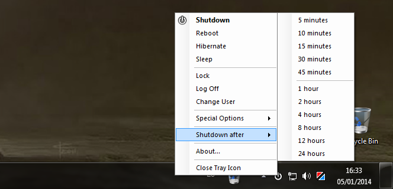
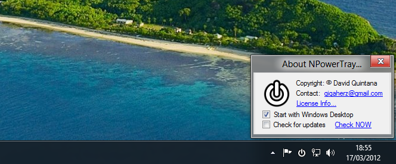

NPowerTray is a small tool that shows a Tray icon with the standard power options.
(The Menu, as of version 1.1.0.0)
(The About Box, as of version 1.2.0.0)
Download Link
You can download NPowerTray here. It does not require any kind of installation, just extract into any folder and run.
You can set the tool to run at startup from the about box.
Source Code
The source code for this application is available in its own github repository, under a 3-clause BSD license.
The latest source code can be found in the ZIP/TAR links above.
Note
This tool requires the Microsoft .NET Framework 4.0 Client Profile, included on Windows 8 by default.
If you want to install the tool in a previous version of windows, you will need this.
A standalone installer is also available here.